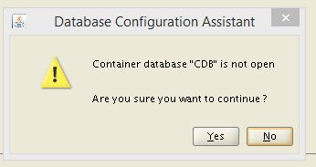

Let’s see the different ways to create a PDB, with different tools. Same disclaimer here as in the first post of the series: don’t expect to get those posts close to what you will have at the exam, but they cover important points that matches the exam topics.
Documentation
Information about the exam says: Be prepared to use the non-searchable documentation during the exam, to help you with correct syntax. Documentation about the ‘Create and manage pluggable databases’ topic is mostly in the Oracle® Database Administrator’s Guide. Search for ‘multitenant’, expand ‘Creating and Removing PDBs with SQL*Plus’
You find all examples there. Remember that creating a PDB is always done from another one:
- from PDB$SEED
- from another PDB in your CDB
- from another PDB in a remote CDB (need to create a db link)
- from an unplugged PDB
- from a non-CDB
and the you will name your datafiles with a conversion from the original ones.
Don’t forget to create the directories if you are not in OMF.
SQL Developer
SQL Developer is your friend. It is designed to help you. I use it in the following way:
- SQL Worksheet is a nice notepad. Even if you finally paste the statements into sqlplus, the SQL Woksheet is graphical, has colors, and can also run statements from there

- SQL Reference documentation is classified by statements. SQL Developer is classified by objects. Right clock context menu shows you what you can do on a table, on a materialized view, etc
- It shows what are your options and can show you the generated SQL statement if you finally want it
I’ll show you an example. You have several ways to name the files when you create a pluggable database, using the convert pairs. But if you have more than one pattern to replace, it’s not easy. Let’s use SQL Developer for that.
In the DBA tab, right click on the Container Database and you have all possible actions on it:
{kind=link}
Here are all option for the CREATE PLUGGABLE DATABASE statement. Easier that going to documentation:
{kind=link}
Above I’ve chosen ‘Custom Names’ to list all files. Then let’s get the SQL:
{kind=link}
Now, I prefer to continue in the SQL Worksheet and I can paste it there. I’ve a file_name_convert pair for each files, so that I can change what I want:
{kind=link}
SQL Developer is really a good tool. When you unplug a PDB, it is still referenced by the original database. Then is you plug it elsewhere without renaming the files, the risk is that you drop it’s datafiles from the original container database. Best recommendation is to immediately remove it from the original CDB and this is exactly what SQL Developer is doing:
#12COCMU Good point @OracleSQLDev A safe unplug must immediately remove the PDB from the original CDB pic.twitter.com/Cdh1k7fpio
— Franck Pachot (@FranckPachot) November 30, 2015
dbca
DBCA is not my preferred tool to create a PDB, but let’s try it.
Let’s start by some troubleshooting (which is not what you want to do at an exam): 
{kind=link}
Well it is open. Let’s troubleshoot. dbca log is in $ORACLE_BASE/cfgtoollogs/dbca and I found the following:
[pool-1-thread-1] [ 2015-11-29 19:22:42.910 CET ] [PluggableDatabaseUtils.isDatabaseOpen:303] Query to check if DB is open= select count(*) from v$database where upper(db_unique_name)=upper('CDB') and upper(open_mode)='READ WRITE'
...
[pool-1-thread-1] [ 2015-11-29 19:22:43.034 CET ] [PluggableDatabaseUtils.isDatabaseOpen:334] DB is not open
Actually, I’ve no DB_UNIQUE_NAME in v$database:
SQL> select db_unique_name from v$database;I’ve the db_unique_name for the instance:DB_UNIQUE_NAME ------------------------------
SQL> show parameter uniq NAME TYPE VALUE ------------------------------------ ----------- ------------------------------ db_unique_name string CDBbut it’s the default (equals the db_name) as I didn’t set it in the init.ora when I created the CDB manually. Let’s try to set it:
SQL> alter system set db_unique_name='CDB' scope=spfile; alter system set db_unique_name='CDB' scope=spfile * ERROR at line 1: ORA-32001: write to SPFILE requested but no SPFILE is in useOk, now I understand. I’ve created the spfile but didn’t restart the instance since then.
SQL> startup force ORACLE instance started.Here it is. It’s not set in spfile, but takes the default. When we start with a pfile where it’s not set, it is not there in V$DATABASE.Total System Global Area 1073741824 bytes Fixed Size 2932632 bytes Variable Size 335544424 bytes Database Buffers 729808896 bytes Redo Buffers 5455872 bytes Database mounted. show parameter Database opened. SQL> show spparameter unique SQL> select db_unique_name from v$database;
DB_UNIQUE_NAME ------------------------------ CDB
My conclusion for the moment is: if you didn’t create the database with DBCA there is no reason to try to use it later.
And the most important when you create a PDB is written in the doc:
#12COCMU backup the PDB after creation (suppose CDB has a backup already) pic.twitter.com/p8I08p3boO
— Franck Pachot (@FranckPachot) November 29, 2015